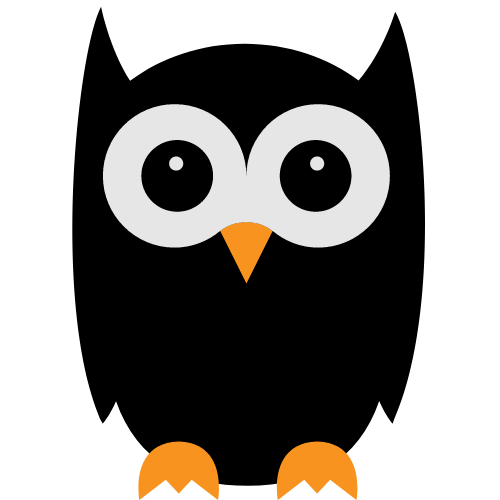
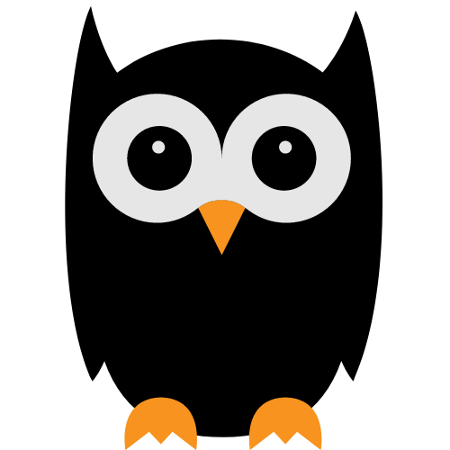

I've got two eyes but they do not see Hold me close, but not while you flee My mouth will chew, but I never ingest Keep your little one at bay or I'll surely be a pest A stone in your hand doesn't make me any nicer Freddy Kruger isn't the only ambidextrous slicer
scissors ✂️
This riddle is easy, though it may seem insurmountable. Some might say that I am both countable and accountable. Some people believe in me. Others think I am a trinket. I am like a Martini, but the way that James Bond likes to drink it. My word is final, though I am not a dictator. But if you don't like it, you can always ask again later.
magic 8 ball üé±
1 of us sings duet showtunes, but always the low part 2 of us are married, though only one of us sings 3 of us are architects of varying aptitudes 4 of us are a family of international acclaim 5 of us have quite the famous matriarch
Hint:
1 likes to shop, but usually just for food Another likes to netflix and chill because he's an introverted dude Another likes to snack but mostly just one type of meat Another would like a bite, but never gets a treat Another is emotional, or is he just excited? Regardless his journey home is expedited
pig üêñ
I am firm. I am not. I am right in between My tone is consistent, but sometimes I am green In delicate situations you'll often tread on me I'm effective ammo in the hands of your enemy If you've ever looked foolish, been embarrassed or disgraced Then surely I've been present all over your face My existence is credit to my almost papa's forbearance But don't debate it, my existence predated my parents
egg ü•ö
 
